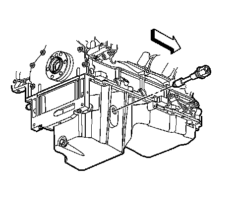

Oil Level Sensor: Service and Repair
Engine Oil Level Sensor and/or Switch Replacement
Removal Procedure

1. Raise and support the vehicle. Refer to Lifting and Jacking the Vehicle.
2. Place a suitable drain pan under the oil pan drain plug.
3. Remove the oil pan drain plug (430).
4. Allow the oil pan to drain completely.
5. Re-install the oil pan drain plug until snug.
6. Remove the drain pan from under the vehicle.

7. Disconnect the engine harness electrical connector (4) from the oil level sensor.

8. Remove the oil level sensor from the oil pan.
Installation Procedure
Notice: Refer to Fastener Notice.
1. Install the oil level sensor to the oil pan.
Tighten the sensor to 20 N.m (15 lb ft).
2. Connect the engine harness electrical connector (4) to the oil level sensor.
3. Ensure that the oil pan drain plug is tight.
Tighten the drain plug to 25 N.m (18 lb ft).
4. Lower the vehicle.
5. Fill the engine with NEW engine oil. Refer to Fluid and Lubricant Recommendations and Approximate Fluid Capacities.
6. Start the engine and inspect for leaks.